45 并发症管理与预防
并发症管理与预防
JONATHAN KADOUCH, PHILIPPE SNOZZI, PEEROOZ SAEED, 和 JANI VAN LOGHEM
向男性和女性患者注射羟基磷灰石钙（CaHA）通常是安全且耐受良好的。迄今为止，报告的严重不良事件（SAEs）或其他具有临床意义的产品相关不良事件相对较少。
不良事件（AEs）可以从各种角度进行分类。概述可参见表 45.1，其中我们根据临床表现（皮肤变色、水肿、感染结节和血管不良事件）对 CaHA 相关 AEs 进行分类。
45.1 短期安全性
报告最频繁的不良事件是局部的，通常被称为“注射部位反应”，例如瘀伤、水肿、红斑、疼痛、瘙痒和感染（图 45.1–45.7）[2–4]。这些 AEs 是短暂的且强度轻微，通常不需要医疗干预。在大多数情况下，它们不被认为与 CaHA 相关，而是被认为是注射创伤和/或注射技术的结果。其他类型的填充剂也报告了不良事件，
| 早期型 AEs（发病时间少于 2 周） | 晚期型 AEs（发病时间超过 2 周） |
| 技术失误： • 非炎性结节 • 不对称性 • 轮廓不规则 感染： • 红斑 • 水肿 • 发热或疼痛 • 炎症结节 • 脓肿 I 型超敏反应： • 红斑 • 水肿/血管性水肿 IV 型超敏反应： • 红斑 • 水肿 • 发热或疼痛 • 炎症结节 • 溃疡 血管闭塞： • 组织坏死 • 失明 皮肤变色： • 丁达尔效应 • 高色素沉着 • 红斑 | 感染（生物膜）： • 红斑 • 水肿 • 疼痛 • 炎症结节 • 溃疡 （肉芽肿性）IV 型超敏反应： • 红斑 • 水肿 • 疼痛 • 炎症结节 • 溃疡 （肉芽肿性）异物反应： • （非）炎性结节 • 红斑 • 水肿 • 疼痛 • 溃疡 （假）脓肿： • 波动性炎症肿胀 填充剂材料移位（脱位）： • 非炎性结节 持续的皮肤变色： • 高色素沉着 • 红斑/扩张血管 |
来源：摘自 1. Kadouch JA. Calcium hydroxylapatite: A review on safety and complications. J Cosmet Dermatol 2017 Jun;16(2):152–161，经许可。
经许可转载自 Kadouch JA. Calcium hydroxylapatite: A review on safety and complications. J Cosmet Dermatol 2017 Jun;16(2):152–161 [1]。
作为透明质酸填充剂。在早期比较羟基磷灰石钙（CaHA）悬浮于羧甲基纤维素凝胶和经胶原处理的患者的试验中，不良事件发生率或持续时间无显著差异 [3,4]。
45.2 长期安全性
目前，羟基磷灰石钙（CaHA）是继透明质酸填充剂之后选择频率第二高的填充剂 [5]。一项关于 CaHA 安全性和并发症的综述得出结论，即 CaHA
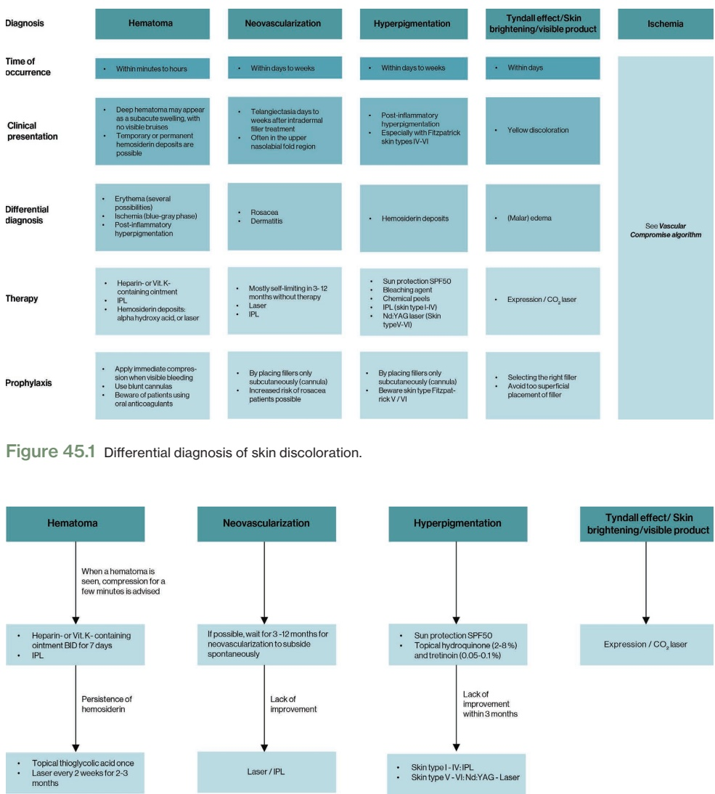
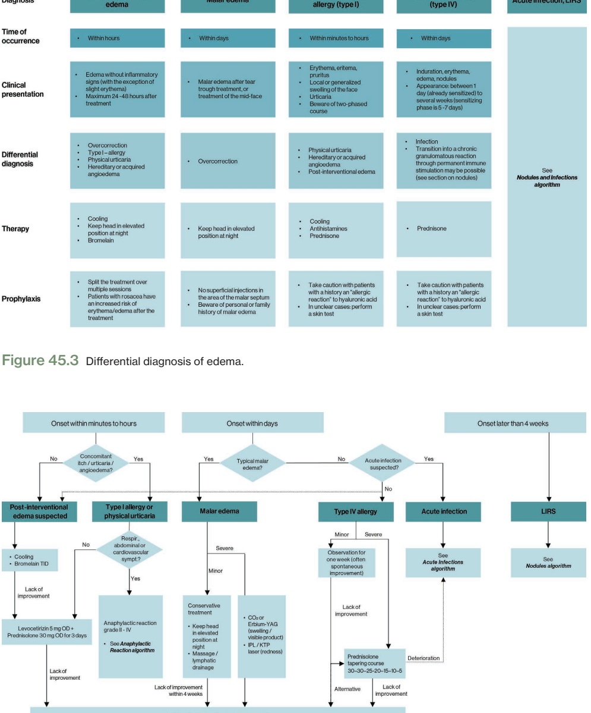
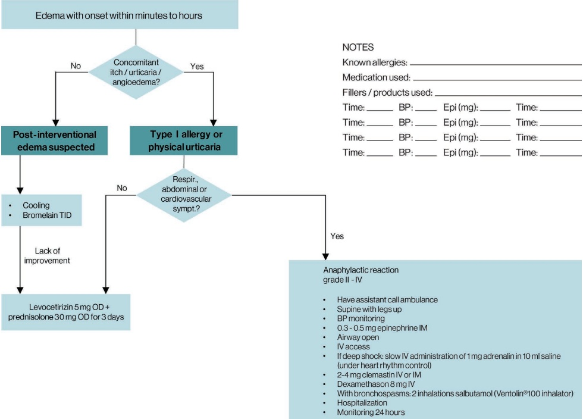
似乎具有良好的安全性 [1]。该综述纳入了对 2,779 名患者进行的 5,081 例治疗，结节是报告的唯一晚期不良事件（AE），发生率为 3%（5,081 例中的 166 例）。然而，必须指出的是，评估的 166 例结节病例中很大一部分发生在注射于唇部、口周和眼周等高度动态的面部区域的旧报告中。目前，此类动态区域禁忌，因为肌肉活动可能导致产品积聚和结节形成 [6]。如果未包含此类适应症，结节发生率会低得多。尽管如此，似乎 CaHA 在所有填充剂中引起异物肉芽肿的程度最低 [7,8]。相比之下，治疗了聚乳酸（poly-L-lactic acid）的患者出现结节和丘疹的发生率估计约为 10–16% [9]。
虽然任何真皮填充剂都可能发生血管受损和闭塞，但使用颗粒状填充物质时风险增加 [10]。此外，对于没有可逆程序的填充剂，后果可能更严重。护理提供者必须了解可能发生的不良事件的类型以及如何处理它们。全面了解面部解剖结构和真皮填充剂的特性至关重要。鉴于血管受损的罕见性，医生可能缺乏识别或管理这些并发症的经验。在本章中，详细讨论了 CaHA 诱导的血管闭塞的管理算法 [11]。
45.3 结节（NODULES）
结节是在皮肤上或皮肤内轻度隆起的病变，但也可能发生在更深的组织或内部器官。它们比丘疹大——直径超过 5 毫米。这是一种临床描述，而不是肉芽肿，后者是组织学诊断 [12,13]。“结节”的诊断本身并不能说明病因。它可能是由填充剂材料定位不当或过度修正、产品积聚或迁移、IV 型超敏反应、感染或异物反应引起的 [14,15]。已证明在 CaHA 注射后会出现肉芽肿性异物反应，但迄今为止仅有少数病例报告记录 [12,16–18]。与市面上所有其他软组织填充剂相比，CaHA 引起肉芽肿的发生率最低 [8]。
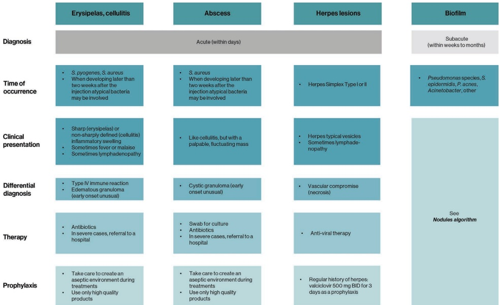
45.4 结节的管理
在管理 CaHA 结节时，确定结节的类型和发病时间非常重要，因为这将决定治疗方案（图 45.8）。早期出现的结节最可能是注射技术的结果，而晚期出现的结节可能是填充剂积聚/迁移或异物反应所致 [15]。早期出现的结节可通过按摩或局部注射生理盐水或无菌水进行管理。晚期出现的结节可使用皮质类固醇进行局部注射治疗（图 45.9）[19–21]。由于 CaHA 与人体组织具有良好的生物相容性 [22,23]，发生炎症反应的风险极低。CaHA 与人体骨骼结构的矿物质成分相同，因此引起的免疫反应最小 [23–25]。
报道在 CaHA 注射后形成结节最常见于唇部（45%）、口周区域（4%）和鼻唇沟（3%）[1]。根据制造商的建议，不应将 CaHA 注射到唇部、口腔黏膜和额骨凹陷处。为尽量降低结节形成的风险，作者建议避免注射在活动度高的面部区域。非炎症性结节可通过直接按摩（手动或使用振动器）进行纠正，以期将结节重新分布到更大的表面积上，治疗三周后可使结节体积减少约 20%。在按摩前局部注射生理盐水或无菌水可分别将有效率提高至 25% 和 35% [26]。在更严重的情况下，可将地塞米松、曲安奈德、5-氟尿嘧啶和利多卡因的混合物直接注射到结节内，随后进行按摩 [27]。
45.4.1 治疗结节的分步方案
-
触诊结节，并用非惯用手的指间固定结节。
-
将生理盐水或无菌水与利多卡因混合物注射到结节内（此处，对于约 0.1 mL 的结节，使用了总计 1 mL 生理盐水和 0.1 mL 2% 利多卡因）。
-
进行强力按摩，按压至骨骼。如果结节位于口腔区域，建议用一只手指置于口内、一只手指置于口外，以在两指之间挤压并使结节变平。
-
如有需要，可使用振动器进行额外的结节重分布。
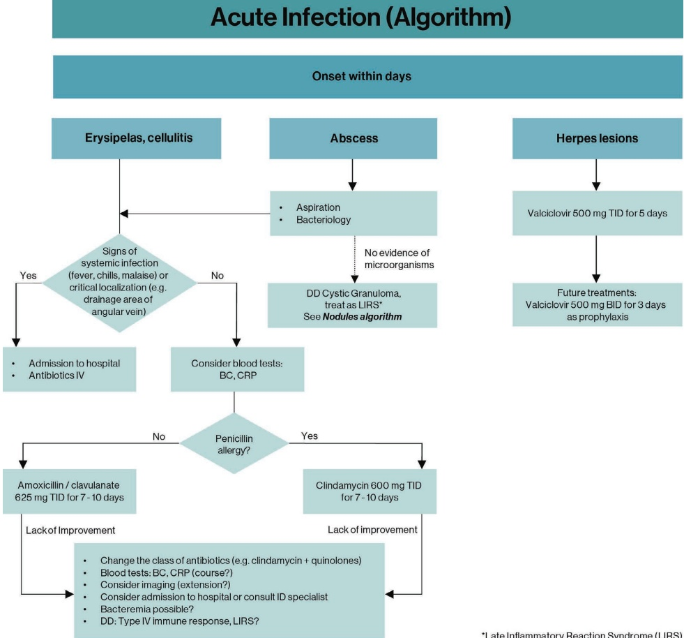
45.5 血管受损
面部任何部位的注射都可能导致失明，但存在几个更容易发生中心视网膜动脉闭塞的解剖危险区域。透彻了解血管解剖结构至关重要。文献报道，眉间区是引发失明的最常见的填充剂注射部位 [28]，其次是鼻部和额部 [29]。从眶上神经和眶上动脉分支的小血管为眉间区域提供血液供应，且侧支循环有限。有报道指出，向鼻部注射是组织坏死的主要原因，在眉间区之后是导致视力丧失的第二大原因，因为该区域的血管侧支较少。因此，向鼻唇沟或鼻背注射可能会意外地将产品输送到动脉内，如果活塞压力大于动脉压力，产品可能会向上游移动至中心视网膜动脉 [30–35]。最后，在血管区域间存在广泛吻合的地方发生血管闭塞的可能性更大，因为有阻塞相邻较小直径动脉的风险，例如中心视网膜动脉 [36]。
45.6 识别血管闭塞的症状
皮肤填充剂治疗（任何类型的填充剂）后因血管受损引起的坏死发生率估计为每 2000 至 10000 例中出现 1 例。
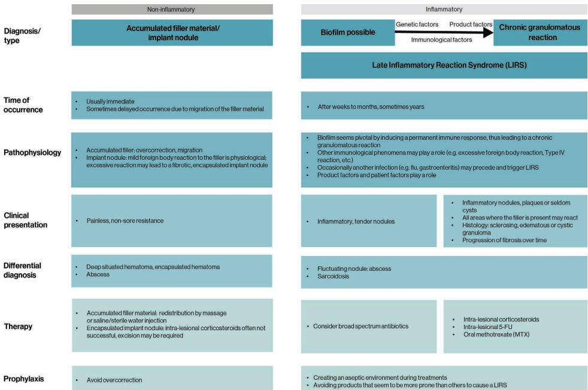
(0.05–0.01%) [37]，尤其是在经验不足的注射者和常规使用锐针的情况下。血管受损或闭塞的常见初始症状是疼痛、苍白和发绀。然而，在某些情况下，患者可能不抱怨任何症状，或在填充剂注射过程中甚至在当天没有出现缺血迹象 [33,38]。可能会在 1–10 分钟后出现“存活反应”（斑驳变色），这可能发展为出血性改变、水疱和数日后的坏死。最后，还可能发生继发感染。
视网膜动脉阻塞也可能发生在面部几乎任何区域的注射后，导致突发的视力受损/丧失，并常伴有严重疼痛（眼部、面部和/或头痛）的抱怨。此外，当脑梗死伴随视网膜动脉阻塞时，还可能出现失语症甚至对侧偏瘫等症状 [39]。相关概述可参见图 45.14。
45.7 预防血管闭塞
CaHA 应缓慢注射，使用较低的注射压力，并仅使用所需的最少量产品（图 45.15）。对于深层注射，骨膜仍是首选层次，但需谨慎，因为不能保证注射物不会渗出血管外。应避免大体积团注，尤其是在眶周区域，该处的用量不应超过 0.025 mL。此外，在面部的其他区域也应小心，建议将团注限制在最大 0.1 mL。
在使用锐针于危险区域时，材料应沉积在骨膜前层次，使针尖与骨骼接触并呈轻微倾斜角度。小口径的针头会增加活塞压力和堵塞的可能性，这可能导致注射者增加对活塞的压力从而引发血管事件。大号规格的针头增加了瘀伤的风险，但可能会降低血管内注射的风险。如果检测到意外阻力、观察到发绀或患者报告疼痛，必须立即停止注射。
其他降低血管受损风险的方法包括采用逆行方式注射，以避免在一个局部区域沉积过大的量。使用肾上腺素/含肾上腺素的局部麻醉剂可促进动脉收缩，减小血管尺寸，从而降低填充剂进入的风险。
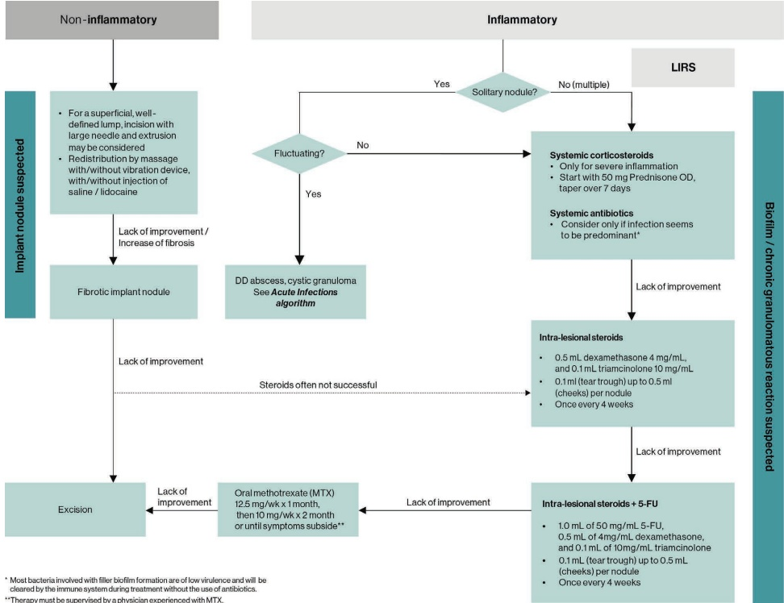
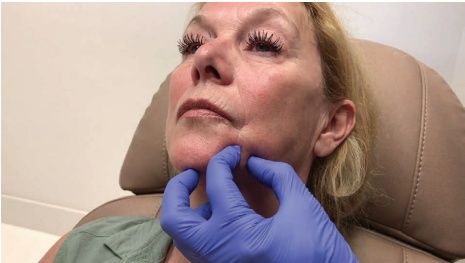
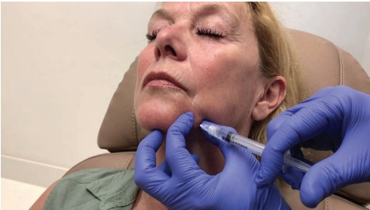
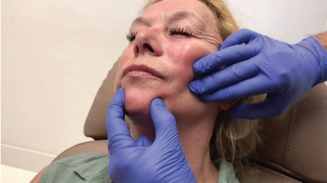
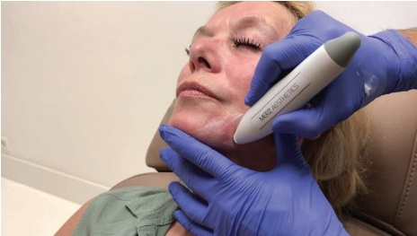
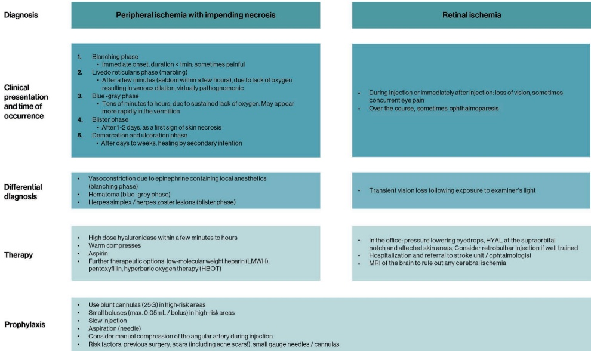
然而，含有肾上腺素的产品可能会掩盖缺血性苍白 [40]。肿胀注射，也称为生理盐水间隙分离术（saline hydrodissection），在进行额部羟基磷灰石钙（CaHA）注射时已被成功使用 [41,42]。用于组织间隙分离的肿胀溶液会在填充剂放置处形成一个空间。
在眶周区域，注射者应使用非惯用手的指尖按压颏部（nasion），以预防视网膜栓塞，尤其是在眶上动脉/眶上沟动脉/鼻背动脉走行区域 [43]。此外，作者建议在靠近眶上沟的区域每次注射的体积不应超过 0.025 mL（所谓的“Jani van Loghem 团注”）[11,44,45]。
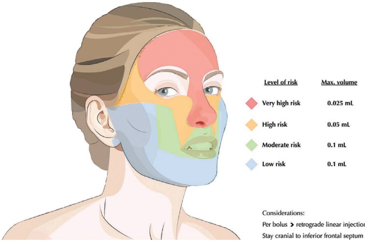
45.8 血管受损的管理
管理应侧重于快速恢复血流；参见图 45.14 获取概述。关于使用 CaHA 注射后发生即将坏死的情况，推荐方案大多与治疗透明质酸填充剂诱导的即将坏死症的共识性建议相似 [46–49]。
当患者抱怨不成比例的突然疼痛和/或皮肤变色时，应立即停止注射；或者在注射者怀疑血供受损时应立即停止。应尝试吸取产品并改善血流。应进行温敷，并按摩该区域以促进血管舒张。
应将重组至 2% 利多卡因（不含肾上腺素）的透明质酸酶注射到血管受损的区域，因为它具有减轻水肿和扩张血管的作用 [11,50,51]。透明质酸酶可直接注射到受影响部位，每 0.1 mL 静脉内 CaHA 的剂量为 600 单位 [11]。如果在一到两小时内没有改善（例如，苍白减轻、毛细血管再充盈改善），则应每两小时额外注射一次透明质酸酶（重复三到四周期）。
硫代硫酸钠（STS）是一种用于治疗人体重金属中毒的无机钠盐 [52]。由于其螯合特性，人们认为 STS 可以从 CaHA 中去除钙并帮助溶解微球 [53–55]。该假设已在实验中得到检验，一些报道显示 CaHA 溶解了 [26,56–59]，尽管 Yankova 等人显示出溶解动脉内 CaHA 的功效有限，并且有必要对血管并发症进行进一步研究 [58]。此外，这些研究缺乏用 STS 治疗 CaHA 的可靠样本，且其显著的体积减小更多是达到分散效应而非降解特性，因此不推荐用于治疗血管闭塞 [54]。此外，Danysz 等人还指出，STS 治疗后出现的显著坏死和出血不应被忽视 [54]，而 Kreymereman 等人则完全没有记录到此类不良事件 [54,56]。鉴于结果存在冲突，一些研究人员提议仅在小体积、间隔数次治疗的多次疗程中使用 STS 作为过度修正或结节形成的处理方法，并随后进行按摩 [55,60,61]，而另一些人则在使用 STS 后未观察到任何改善 [62]。
应使用阿司匹林 500 mg 来限制血小板聚集、血栓传播和进一步的受损 [36]。可以使用西地那非和他达拉粉等药物来诱导平滑肌松弛、扩张血管和增加血流 [10]。最后，可使用低分子量肝素，如奈德罗巴磷（fraxiparine），皮下注射以预防栓子近端的血栓形成，并且应在静脉内事件发生后的四小时内进行 [30]。
45.9 眼部阻塞/视力丧失的管理
一旦视网膜动脉被阻塞，在失明不可逆转之前，仅有 60 至 90 分钟的短暂机会来恢复视网膜血流 [63]。患者必须
立即转运至最近的眼科专家处，并携带尽可能多的关于产品、注射部位和注射体积的信息。
快速降低眼内压是治疗的首要目标（图 45.16–45.17）。这将有助于栓子向下游脱落并改善视网膜灌注。为促进降低眼内压以及推动栓子通过视网膜血管，应尽快开始眼部按摩。该技术涉及在一到三个小时内对眼内压进行小幅度、快速的改变，直到所有视网膜栓子从血管中清除。眼部按摩应在患者仰卧位、双眼闭合并向下看时进行。用两根手指轻柔地按压麻醉眼的巩膜，使眼球凹陷几毫米，然后以每秒两次到三次的频率突然释放 [64]。研究发现，持续的、快速的小幅度眼内压变化比短暂的高压激进按摩更有利于脱落栓子。该过程应持续进行，直到患者到达医院接受治疗的眼科专家处。
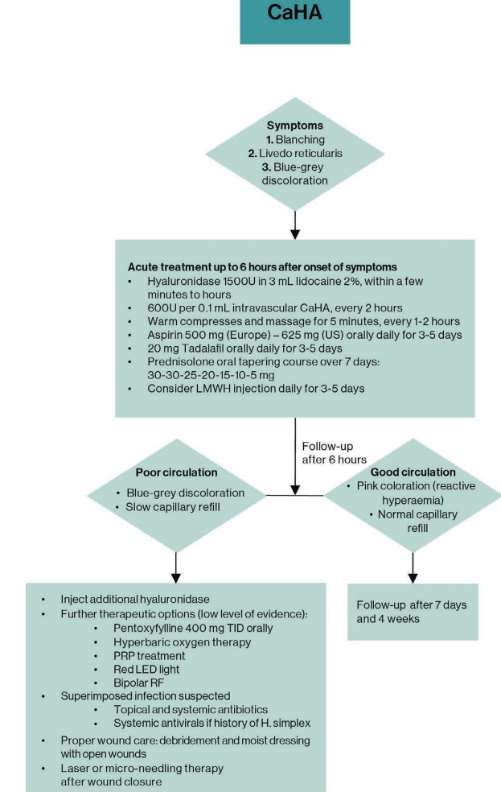
羟基磷灰石钙（CaHA）
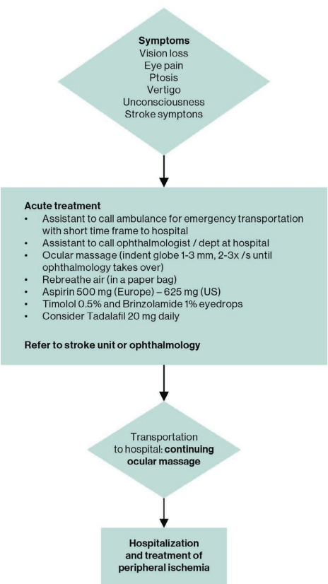
使用眼滴剂形式的 β-肾上腺素受体拮抗剂（例如，利多卡林 0.5%）、布林佐拉胺或氮卓胺也可帮助降低眼内压；如果静脉注射氮卓胺，可能更有益。应口服阿司匹林（500 mg）以降低血栓形成的风险，并使用静脉注射地塞米松来减轻炎症。额外的急性措施是鼓励患者在纸袋中“重新呼吸”，以提高血液中的二氧化碳水平，这会引起视网膜动脉舒张，可能有助于清除阻塞 [65]。已发表了一篇关于 CaHA 术后血管并发症治疗的共识性文章，讨论了 CaHA 血管受损后的早期和晚期干预策略 [11]。
参考文献
[1] J. A. Kadouch, “Calcium hydroxylapatite: A review on safety and complications,” J Cosmet Dermatol, vol. 16, no. 2, pp. 152–161, 2017.
[2] S. L. Silvers et al., “Prospective, open-label, 18-month trial of calcium hydroxylapatite (Radiesse) for facial soft-tissue augmentation in patients with human immunodeficiency virus-associated lipoatrophy: One-year durability,” Plast Reconstr Surg, vol. 118, no. Suppl 3, pp. 34S–45S, 2006.
[3] S. Smith et al., “A randomized, bilateral, prospective comparison of calcium hydroxylapatite microspheres versus human-based collagen for the correction of nasolabial folds,” Dermatol Surg, vol. 33, no. Suppl 2, pp. S112–S121, 2007.
[4] J. Van Loghem et al., “Calcium hydroxylapatite: Over a decade of clinical experience,” J Clin Aesthet Dermatol, vol. 8, no. 1, pp. 38–49, 2015.
[5] The Aesthetis Society, “Cosmetic surgery National Data Bank: Statistics 2013,” [internet], 2023: www.theaestheticsociety.org/media/procedural-statistics (accessed Apr. 2025).
[6] G. Casabona, M. S. Sato, “Calcium hydroxylapatite to treat the face,” in: Issa, M., Tamura, B., eds., Botulinum Toxins, Fillers and Related Substances, vol. 4. Cham: Springer, 2018, pp. 327–347.
[7] G. Lemperle et al., “Foreign body granulomas after all injectable dermal fillers. Part 1: Possible causes,” Plast Reconstr Surg, vol. 123, no. 6, pp. 1842–1863, 2009.
[8] G. Lemperle, N. Gauthier-Hazan, “Foreign body granulomas after all injectable dermal fillers. Part 2: Treatment options,” Plast Reconstr Surg, vol. 123, no. 6, pp. 1864–1873, 2009.
[9] C. G. J. C. A. De Vries, R. E. Geertsma, “Clinical data on injectable tissue fillers: A review,” Expert Rev Med Devices, vol. 10, no. 6, pp. 835–853, 2023.
[10] K. Beer et al., “A treatment protocol for vascular occlusion from particulate soft tissue augmentation,” J Clin Aesthet Dermatol, vol. 5, no. 5, p. 44, 2012.
[11] J. van Loghem et al., “Managing intravascular complications following treatment with calcium hydroxylapatite: An expert consensus,” J Cosmet Dermatol, vol. 19, no. 11, pp. 2845–2858, 2020.
[12] T. Daley et al., “Oral lesions associated with injected hydroxyapatite cosmetic filler,” Oral Surg Oral Med Oral Pathol Oral Radiol, vol. 114, no. 1, pp. 107–111, 2012.
[13] J. A. Kadouch et al., “Granulomatous foreign-body reactions to permanent fillers: Detection of CD123+ plasmacytoid dendritic cells,” Am J Dermatopathol, vol. 37, no. 2, pp. 107–114, 2015.
[14] P. J. Nicolau, “Long-lasting and permanent fillers: Biomaterial influence over host tissue response,” Plast Reconstr Surg, vol. 119, no. 7, pp. 2271–2286, 2007.
[15] J.A. Kadouch et al., “Delayed-onset complications of facial soft tissue augmentation with permanent fillers in 85 patients,” Dermatol Surg, vol. 39, no. 10, pp. 1474–1485, 2013.
[16] L. Requena et al., “Adverse reactions to injectable soft tissue fillers,” J Am Acad Dermatol, vol. 64, no. 1, pp. 1–34, 2011.
[17] I. Moulonguet et al., “Foreign body reaction to Radiesse: 2 cases,” Am J Dermatopathol, vol. 35, no. 3, pp. e35–e40, 2013.
[18] S. Shahrabi-Farahani et al., “Granulomatous foreign body reaction to dermal cosmetic fillers with intraoral migration,” Oral Surg Oral Med Oral Pathol Oral Radiol, vol. 117, no. 1, pp. 105–110, 2014.
[19] D. A. Jansen, M. H. Graivier, “Evaluation of a calcium hydroxylapatite-based implant (Radiesse) for facial soft-tissue augmentation,” Plast Reconstr Surg, vol. 118, no. Suppl 3, pp. 22S–30S, discussion 31S–33S, 2006.
[20] D. Roy et al., “Clinical trial of a novel filler material for soft tissue augmentation of the face containing synthetic calcium hydroxylapatite microspheres,” Dermatol Surg, vol. 32, no. 9, pp. 1134–1139, 2006.
[21] N. S. Sadick et al., “A multicenter, 47-month study of safety and efficacy of calcium hydroxylapatite for soft tissue augmentation of nasolabial folds and other areas of the face,” Dermatol Surg, vol. 33, no. Suppl 2, pp. S122–S126; discussion S126–S127, 2007.
[22] P. Flaharty, "Radiance," Facial Plast Surg, vol. 20, no. 2, pp. 165–169, 2004.
[23] T. Pavicic, “Calcium hydroxylapatite filler: An overview of safety and tolerability,” J Drugs Dermatol, vol. 12, no. 9, pp. 996–1002, 2013.
[24] J. Stein et al., “Histopathologic study of alternative substances for vocal fold medialization,” Ann Otol Rhinol Laryngol, vol. 109, no. 2, pp. 221–226, 2000.
[25] E. S. Marmur et al., “Clinical, histologic and electron microscopic findings after injection of a calcium hydroxylapatite filler,” J Cosmet Laser Ther, vol. 6, no. 4, pp. 223–226, 2004.
[26] R. Voigts et al., “Dispersion of calcium hydroxylapatite accumulations in the skin: Animal studies and clinical practices,” Dermatol Sur, vol. 36, no. Suppl 1, pp. 798–803, 2010.
[27] S. Bay Aguilera et al., “Successful treatment of calcium hydroxylapatite nodules with intralesional 5-Fluorouracil, dexamethasone, and triamcinolone,” J Drugs Dermatol, vol. 15, no. 9, pp. 1142–1143, 2016.
[28] J. F. Scheuer et al., “Anatomy of the facial danger zones: Maximizing safety during soft-tissue filler injections,” Plast Reconstr Surg, vol. 139, no. 1, pp. 50e–58e, 2017.
[29] G. J. Goodman et al., “A consensus on minimizing the risk of hyaluronic acid embolic visual loss and suggestions for immediate bedside management,” Aesthet Surg J, vol. 40, no. 9, pp. 1009–1021, 2020.
[30] A. S. Glaich et al., “Injection necrosis of the glabella: Protocol for prevention and treatment after use of dermal fillers,” Dermatol Surg, vol. 32, no. 2, pp. 276–281, 2006.
[31] L. D. Grunebaum et al., “The risk of alar necrosis associated with dermal filler injection,” Dermatol Surg, vol. 35, no. Suppl 2, pp. 1635–1640, 2009.
[32] C. N. Ozturk et al., “Complications following injection of soft-tissue fillers,” Aesthet Surg J, vol. 33, no. 6, pp. 862–877, 2013.
[33] L. Tracy et al., “Calcium hydroxylapatite associated soft tissue necrosis: A case report and treatment guideline,” J Plast Reconstr Aesthet Surg, vol. 67, no. 4, pp. 564–568, 2014.
[34] X. Li et al., “A novel hypothesis of visual loss secondary to cosmetic facial filler injection,” Ann Plast Surg, vol. 75, no. 3, pp. 258–260, 2015.
[35] H. M. Rayess et al., “A cross-sectional analysis of adverse events and litigation for injectable fillers,” JAMA Facial Plast Surg, vol. 20, no. 3, pp. 207–214, 2018.
[36] C. DeLorenzi, “Transarterial degradation of hyaluronic acid filler by hyaluronidase,” Dermatol Surg, vol. 40, no. 8, pp. 832–841, 2014.
[37] L. Schelke et al, “Incidence of vascular obstruction after filler injections,” Aesthet Surg J, vol. 40, no. 8, pp. NP457–NP460, 2020.
[38] B. S. F. Bravo et al., “Delayed-type necrosis after soft-tissue augmentation with hyaluronic acid,” J Clin Aesthet Dermatol, vol. 8, no. 12, p. 42, 2015.
[39] D. Lazzeri et al., “Blindness following cosmetic injections of the face,” Plast Reconstr Surg, vol. 129, no. 4, pp. 995–1012, 2012.
[40] R. S. Narins et al., “Clinical conference: Management of rare events following dermal fillers—focal necrosis and angry red bumps,” Dermatol Surg, vol. 32, no. 3, pp. 426–434, 2006.
[41] Y. Y. Y. Chao, “Saline hydrodissection: A novel technique for the injection of calcium hydroxylapatite fillers in the forehead,” Dermatol Surg, vol. 44, no. 1, pp. 133–136, 2018.
[42] J. Kim, “Novel forehead augmentation strategy: Forehead depression categorization and calcium hydroxyapatite filler delivery after tumescent injection,” Plast Reconstr Surg, vol. 6, no. 9, p. e1858, 2018.
[43] T. Tansatit et al., “Verification of embolic channel causing blindness following filler injection,” Aesthetic Plast Surg, vol. 39, no. 1, pp. 154–161, 2015.
[44] T. T. Khan et al., “An anatomical analysis of the supratrochlear artery: Considerations in facial filler injections and preventing vision loss,” Aesthet Surg J, vol. 37, no. 2, pp. 203–208, 2017.
[45] J. A. J. Van Loghem, “Use of calcium hydroxylapatite in the upper third of the face: Retrospective analysis of techniques, dilutions and adverse events,” J Cosmet Dermatol, vol. 17, no. 6, pp. 1025–1030, 2018.
[46] C. Delorenzi, “Complications of injectable fillers, part I,” Aesthet Surg J, vol. 33, no. 4, pp. 561–575, 2013.
[47] J. L. Cohen et al., “Treatment of hyaluronic acid filler-induced impending necrosis with hyaluronidase: Consensus recommendations,” Aesthet Surg J, vol. 35, no. 7, pp. 844–849, 2015.
[48] M. King et al., “This month’s guideline: The use of hyaluronidase in aesthetic practice (v2.4),” J Clin Aesthet Dermatol, vol. 11, no. 6, pp. E61–E68, 2018.
[49] C. DeLorenzi, “New high dose pulsed hyaluronidase protocol for hyaluronic acid filler vascular adverse events,” Aesthet Surg J, vol. 37, no. 7, pp. 814–825, 2017.
[50] A. Engstrom-Laurent et al., “Raised serum hyaluronate levels in scleroderma: An effect of growth factor induced activation of connective tissue cells?,” Ann Rheum Dis, vol. 44, no. 9, pp. 614–620, 1985.
[51] S. H. Dayan et al., “Management of impending necrosis associated with soft tissue filler injection,” J Drugs Dermatol, vol. 10, pp. 1007–1012, 2011.
[52] P. L. McGeer et al., “Medical uses of sodium thiosulfate,” J Neurol Neuromedicine, vol. 1, no. 3, pp. 28–30, 2016.
[53] W. C. O'Neill, K. I. Hardcastle, "The chemistry of thiosulfate and vascular calcification," Nephrol Dial Transplant, vol. 27, no. 2, pp. 521–526, 2012.
[54] W. Danysz et al., “Can sodium thiosulfate act as a reversal agent for calcium hydroxylapatite
filler? Results of a preclinical study," Clin Cosmet Investig Dermatol, vol. 13, pp. 1059–1073, 2020.
[55] A. D. McCarthy et al., “A structured approach for treating calcium hydroxylapatite focal accumulations,” Aesthet Surg J, vol. 44, no. 8, pp. 869–879, 2024.
[56] P. Kreymereman, W. Miller, “Sodium thiosulfate injection dissolves calcium hydroxylapatite particles: An animal study,” J Am Acad Dermatol, vol. 79, no. 3, p. AB265, 2018.
[57] D. M. Robinson, “In vitro analysis of the degradation of calcium hydroxylapatite dermal filler: A proof-of-concept study,” Dermatol Surg, vol. 44, no. Suppl 1, pp. S5–S9, 2018.
[58] M. Yankova et al., “Intraarterial degradation of calcium hydroxylapatite using sodium thiosulfate—an in vitro and cadaveric study,” Aesthet Surg J, vol. 41, no. 5, pp. NP226–NP236, 2021.
[59] E. A. Merkel et al., “In vitro and ex vivo investigation of intralesional sodium thiosulfate as a reversal agent for calcium hydroxylapatite soft tissue filler,” J Invest Dermatol, vol. 142, no. 11, pp. 3125–3127, 2022.
[60] P. P. Rullan et al., “The use of intralesional sodium thiosulfate to dissolve facial nodules from calcium hydroxylapatite,” Dermatol Surg, vol. 46, no. 10, pp. 1366–1368, 2020.
[61] I. Aksenenko et al., “A method for treating complications developed following countour correction with calcium hydroxylaptite-based filler,” J Clin Aesthet Dermatol, vol. 15, no. 3, pp. 38–43, 2022.
[62] M. D. Nipshagen et al., “Non-inflammatory nodule formation after hyperdiluted calcium hydroxyapatite treatment in the neck area,” Dermatol Ther, vol. 33, no. 6, p. e14272, 2020.
[63] K. T. D. Loh et al., “Prevention and management of vision loss relating to facial filler injections,” Singapore Med J, vol. 57, no. 8, pp. 438–443, 2016.
[64] D. L. Baker, “Gentle, prolonged ocular massage can restore vision after retinal artery occlusion,” Ocular Surgery News [online], Healio, 2004: www.healio.com/news/ophthalmology/20120331/gentle-prolonged-ocular-massage-can-restore-vision-after-retinal-artery-occlusion (accessed Apr. 2025).
[65] L. Walker, M. King, “This month’s guideline: Visual loss secondary to cosmetic filler injection,” J Clin Aesthet Dermatol, vol. 11, no. 5, pp. E53–E55, 2018.